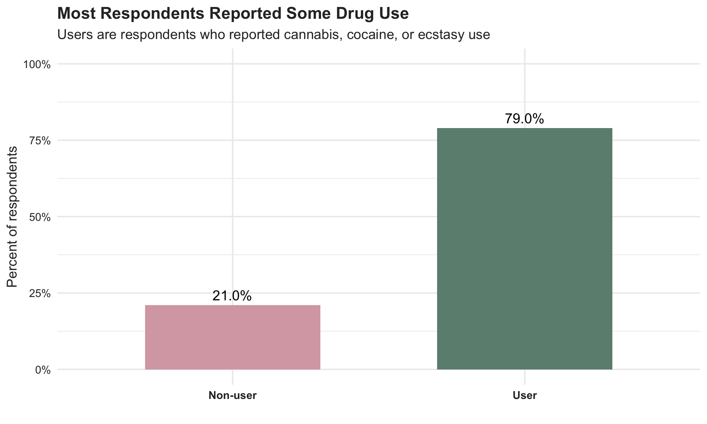
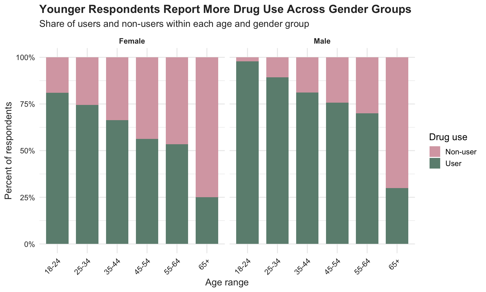
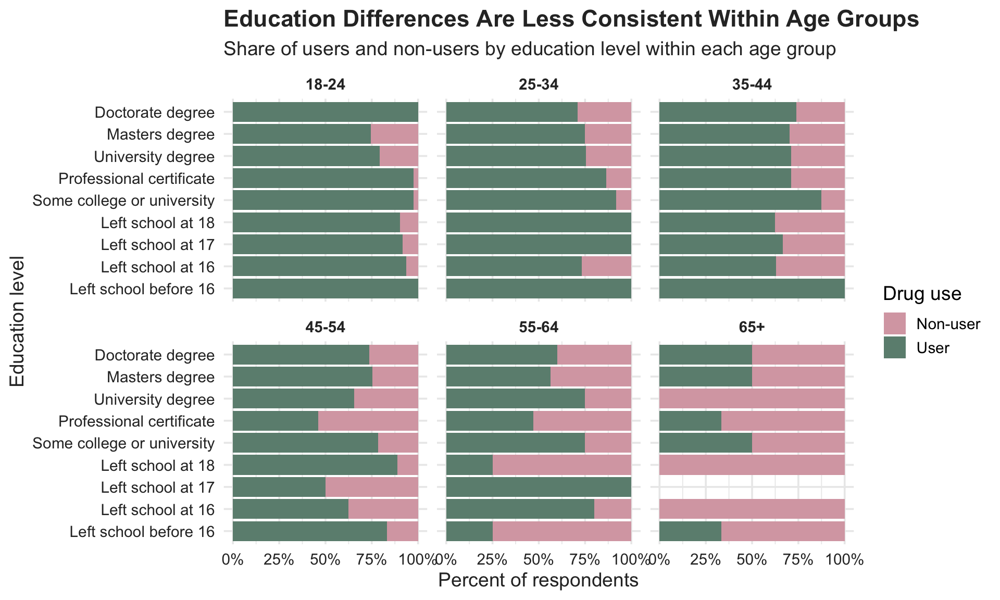
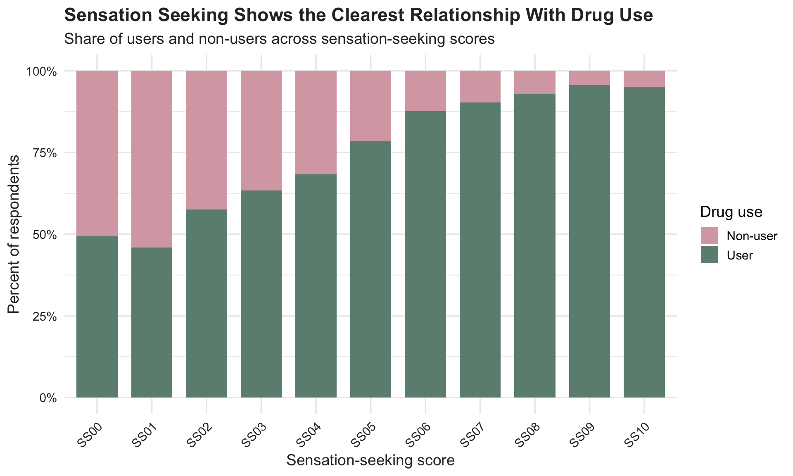
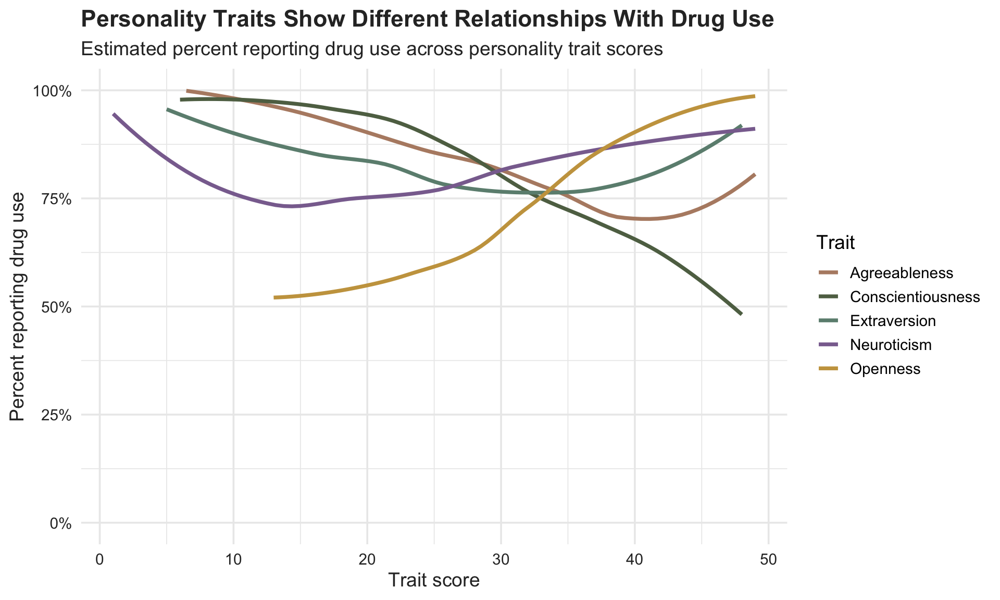
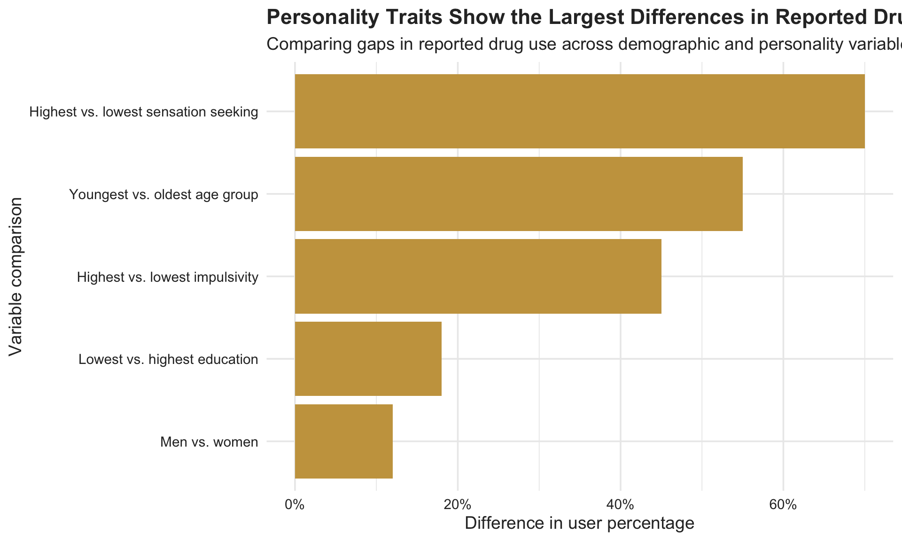

| Dataset Overview | |
| Drug Consumption Survey Dataset | |
| Category | Description |
|---|---|
| Number of respondents | 1885 |
| Number of variables | 36 |
| Drug use definition | User = respondent reported use of cannabis, cocaine, or ecstasy |
| Drug variables used for this report | Cannabis, cocaine, ecstasy |
| Demographic variables | Age, gender, education, country, ethnicity |
| Personality variables | Neuroticism, extraversion, openness, agreeableness, conscientiousness, impulsivity, sensation seeking |
| Survey population | Adults from English-speaking countries |
Drug Use Patterns
CS 333: Information Visualization
Drug use is usually discussed through demographic categories such as age, gender, or education level. While these factors do shape patterns of use, they may not fully explain why some individuals are more likely to experiment with or regularly consume drugs than others.
Using a survey dataset of 1,885 respondents from English-speaking countries, this project explores how demographic characteristics and psychological traits relate to reported drug use. Respondents were categorized as “Users” if they reported any cannabis, cocaine, or ecstasy use.
Our analysis begins with broad demographic patterns before moving into personality and behavioral traits. While younger respondents and men generally reported higher levels of drug use, the clearest and most consistent relationships appeared in psychological variables such as sensation seeking, impulsivity, and openness. Overall, the findings suggest that drug use behavior may be influenced by demographic background and deeper behavioral tendencies tied to risk-taking and novelty-seeking behavior.
Dataset Overview
Establishing the Baseline
Communication Goal: Define the outcome variable and show how common reported drug use is before comparing groups.
Before examining differences across groups, it is important to establish how common reported drug use is within the dataset overall. Nearly 80% of respondents reported some use of cannabis, cocaine, or ecstasy, placing them in the “User” category. This suggests that drug experimentation or occasional use is relatively common within this survey population and provides the foundation for comparing how usage varies across demographic and psychological characteristics.

Demographics Matter, But Only So Much
Communication Goal: Show that age and gender create clear population-level differences, but do not fully explain drug use patterns.
Drug use is not evenly distributed across the population. Age and gender produce some of the clearest demographic differences, with younger respondents and men reporting higher levels of use overall. Across both genders, reported drug use is highest among younger respondents and steadily declines with age. Male respondents consistently report higher levels of use across most age groups, though the decline with age is visible for both men and women. The graph suggests that drug use is associated not only with gender, but also with life stage and generational differences in social behavior, experimentation, and exposure.

Education Is More Complicated Than It Looks
Communication Goal: Demonstrate why education should be interpreted carefully because it overlaps with age and life stage.
While age and gender show relatively clear trends, education produces a more complicated pattern. At first glance, some education groups appear more likely to report drug use than others. However, education is closely connected to age, making it difficult to separate whether the observed differences reflect educational attainment itself or simply the fact that some groups contain younger respondents. When education is compared within age groups, the relationship becomes less straightforward. Some differences remain visible, but the patterns are weaker and less consistent than those observed for age. This suggests that education alone may not be a strong predictor of drug use behavior and that other factors may play a role.

Personality Explains the Strongest Patterns
Communication Goal: Show that behavioral traits, especially sensation seeking, create strong and consistent differences.
The demographic patterns explored earlier help explain who is more likely to report drug use, but they do not fully explain why. The strongest and most consistent differences in the dataset emerge when looking at psychological and behavioral traits, particularly those associated with risk-taking, novelty-seeking, and impulsive behavior. Sensation seeking shows the clearest relationship with reported drug use in the entire project. As sensation-seeking scores increase, the proportion of users rises dramatically. Lower-scoring groups contain much larger shares of non-users, while higher-scoring groups are overwhelmingly dominated by users. Compared with demographic variables such as age or education, the relationship here is both stronger and more consistent, suggesting that personality traits may be more predictive of drug use behavior.

The broader personality traits reinforce this pattern. Openness, extraversion, and neuroticism tend to be associated with higher reported drug use, while conscientiousness shows the opposite trend. These psychological traits reveal more directional and behaviorally meaningful patterns. Together, the results suggest that drug use may be closely tied to underlying behavioral tendencies such as curiosity, emotional regulation, and willingness to engage in risk-taking behavior.

What Matters Most?
Communication Goal: Compare the strongest relationships side by side to reveal which factors appear most important overall.
The final graph summarizes which variables show the largest differences in reported drug use across the dataset. While demographic factors like age, gender, and education help explain some variation, personality and psychological traits — especially sensation seeking and impulsivity — appear to show the strongest relationships with reported drug use. Overall, the project suggests that drug use behavior may be shaped not only by demographic background, but also by deeper behavioral and psychological tendencies.

Conclusion
This project began with a simple question: who reports drug use within this survey population? Initial demographic analysis showed clear differences across age and gender, with younger respondents and men generally reporting higher levels of use. However, as the analysis moved beyond demographics, personality traits emerged as the strongest and most consistent predictors of reported drug use.
In particular, sensation seeking demonstrated a far stronger relationship with drug use than education or many demographic categories. Other personality dimensions, including openness and conscientiousness, also revealed meaningful behavioral patterns tied to experimentation and risk-taking.
More broadly, the project highlights the importance of moving beyond surface-level explanations when analyzing human behavior. While demographics provide useful context, psychological and behavioral characteristics may offer a more complete understanding of why individuals differ in their likelihood of engaging in drug use.